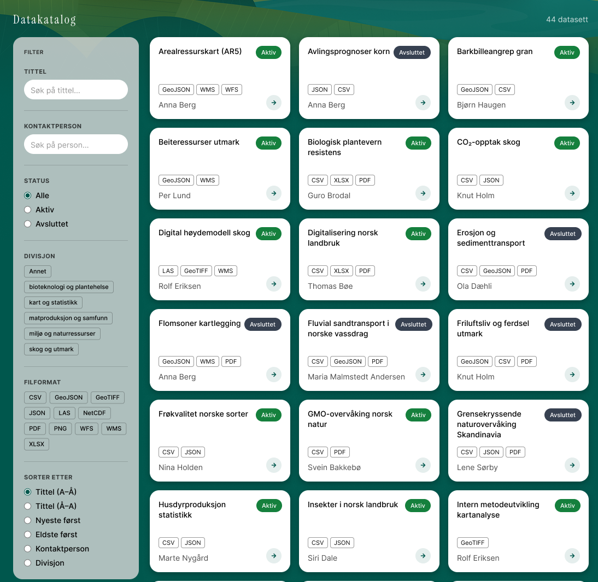
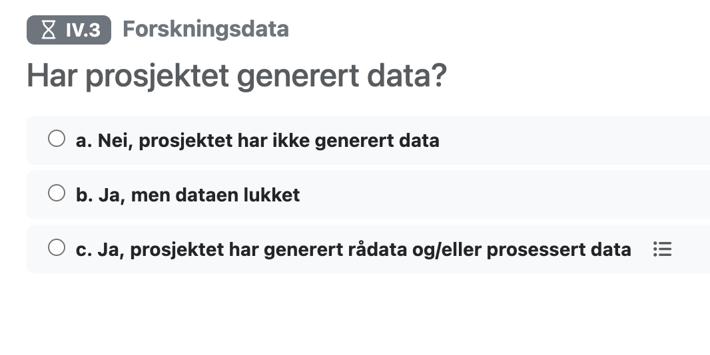
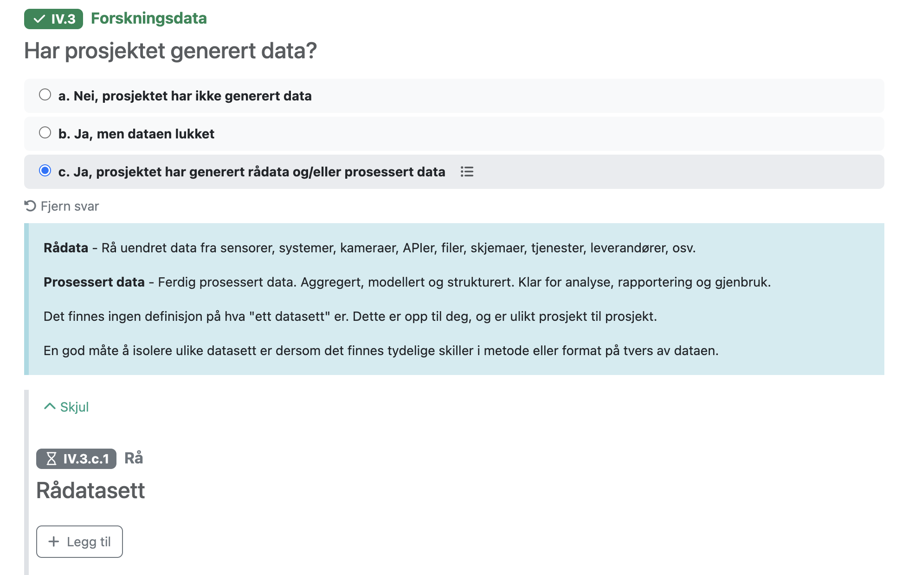
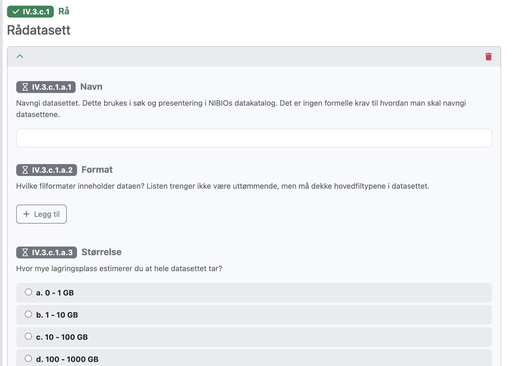
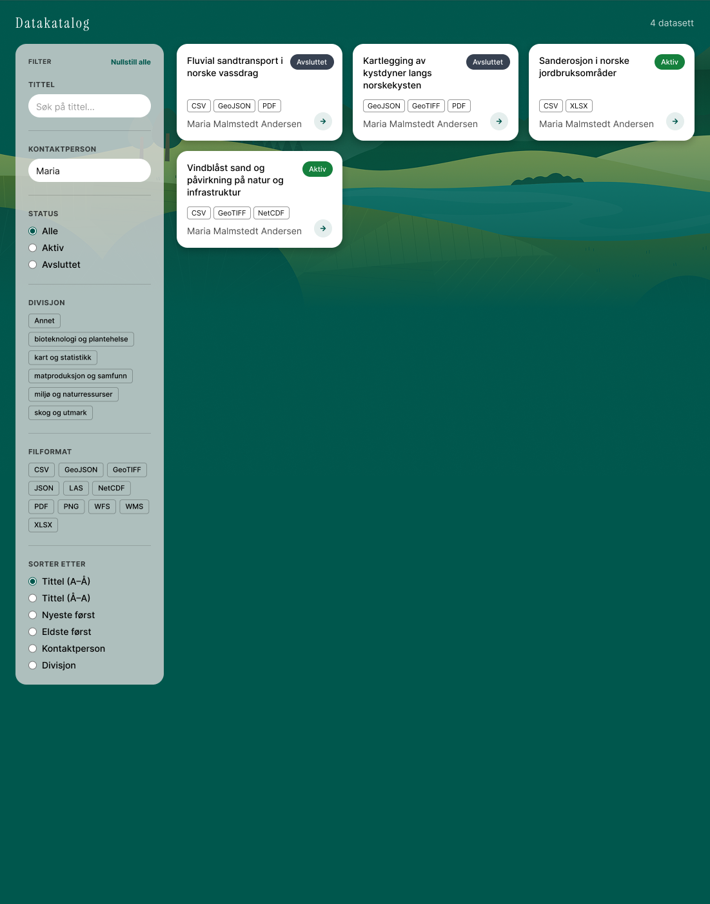
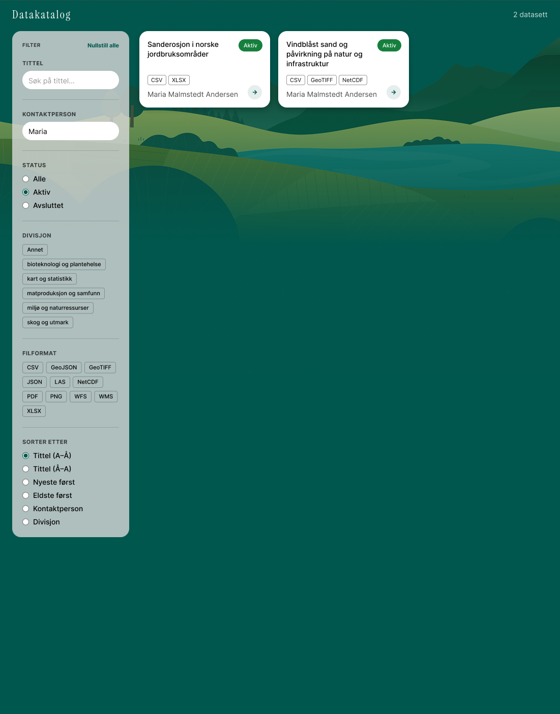
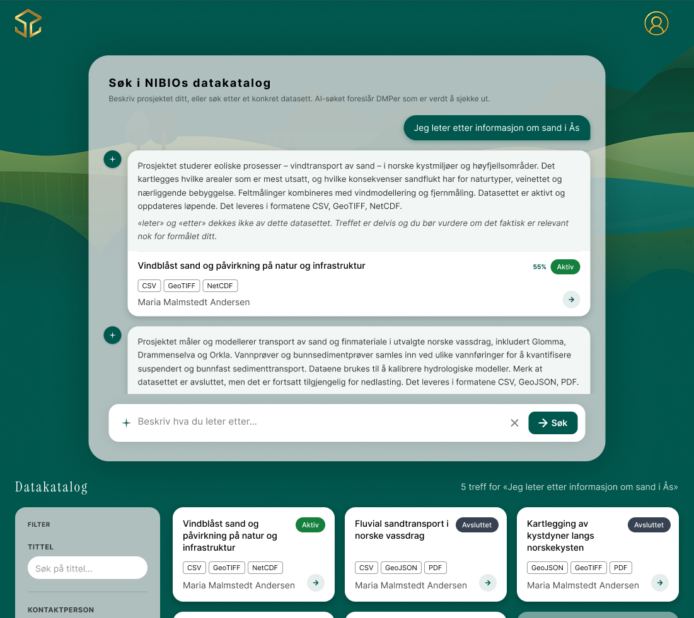

NIBIO
Hvordan kan en stor forskningsorganisasjon få bedre oversikt over egne data, uten å gi forskerne enda mer dokumentasjonsarbeid?
IT-konsulent · Sommeren 2026
Som IT-konsulent sommeren 2026 jobbet jeg med en stor og åpen oppgave om forskningsdatahåndtering. Sammen med én annen intern gikk jeg fra kartlegging og brukerinnsikt til prototyping, brukertesting og teknisk utforsking av et DMP-verktøy og en intern datakatalog.

01 · FORSTÅ PROBLEMET
Før vi kunne designe, måtte vi forstå NIBIO
Vi startet med det som allerede fantes. Vi leste interne rapporter og tidligere DMP-er, kartla systemlandskapet og snakket med forskere, IKT og informasjonsforvaltning. Målet var å forstå både arbeidsflytene og det tekniske landskapet en ny løsning måtte passe inn i.
VI SÅ Varierende datakompetanse, vanskelig terminologi og mye tid brukt på dokumentasjon.
TYDELIGSTE FRIKSJON Den samme informasjonen ble registrert flere steder.
RETNING Skape verdi ved å bruke eksisterende informasjon bedre, fremfor å legge til enda en oppgave.
02 · FRA INNSIKT TIL RETNING
Kan vi bruke det som allerede finnes?
Dobbeltregistrering var et av de tydeligste irritasjonsmomentene. Før vi laget enda et sted forskerne måtte fylle inn informasjon, undersøkte vi derfor hvor den samme informasjonen allerede fantes.
Mye av det datakatalogen trengte, ble allerede registrert i datahåndteringsplanen. Det ga oss hovedgrepet: koble DMP-en og datakatalogen sammen, slik at informasjon kan registreres én gang og brukes videre automatisk.
DMP → intern datakatalog → gjenfinning og gjenbruk
Dette ble et viktig UX-prinsipp for meg: Før jeg designer en ny oppgave for brukeren, undersøker jeg om behovet kan løses ved å bruke noe som allerede finnes.
03 · PROTOTYPE, TEST, ITERER
En ferdig løsning trenger fortsatt UX-design
FAIR Wizard ga oss infrastrukturen. Vi måtte fortsatt designe opplevelsen forskerne faktisk møtte. Jeg jobbet med hvilke spørsmål som skulle vises, rekkefølge, språk, veiledning og når mer kompleks informasjon var relevant.



DET VI GJORDE Vi prototypet en betinget flyt og testet om forskerne forsto spørsmålene og kunne bevege seg effektivt gjennom dem.
DET VI LÆRTE Ulik datakompetanse gjorde språk og veiledning viktig. Forskerne verdsatte enkelhet og effektivitet mer enn dekorativ visuell styling.
DET VI ENDRET Vi justerte ordlyd, rekkefølge og veiledning, og viste detaljerte spørsmål om datasett bare når de var relevante.
Det minnet meg på at brukeropplevelsen ikke bare ligger i det visuelle. Innhold, rekkefølge og logikk kan være minst like viktige designmaterialer.
04 · DESIGN FOR KONTEKSTEN
Vi bygget videre på det som allerede fantes
NIBIO hadde ikke ett designsystem eller ett samlet produkt vi kunne designe innenfor. Derfor tok vi utgangspunkt i organisasjonens eksisterende systemer, arbeidsflyter, tekniske infrastruktur og organisatoriske rammer.
Vi kunne bygget et eget DMP-grensesnitt, men drift, vedlikehold, fremtidige endringer og integrasjoner var viktigere produktvalg enn selve skjemaet. Vi valgte FAIR Wizard fordi løsningen kunne tilpasses NIBIO, kobles til datakatalogen og passe inn i senere DMP-arbeid. Å bruke en eksisterende løsning fjernet ikke behovet for UX-design.
05 · FRA REGISTRERING TIL GJENFINNING
Fra registrering til gjenfinning
Når informasjonen først var registrert, måtte den skape verdi for andre. Vi utviklet derfor en intern datakatalog der forskere kunne se tidligere arbeid, tilgjengelige data, hvor de var lagret og hvem de kunne kontakte. Slik kunne informasjonen støtte oversikt, gjenbruk og samarbeid.
06 · TO MÅTER Å FINNE INFORMASJON
To måter å finne informasjon på
Forskerne møtte katalogen med ulik kunnskap. Derfor laget vi to måter å søke på.
Når jeg vet hva jeg leter etter
Når brukeren kjenner noen av kriteriene på forhånd, kan tekstsøk og filtre brukes til å snevre inn resultatene.


Når jeg ikke vet nøyaktig hva jeg leter etter
Forskerne visste ikke alltid hva prosjektet eller datasettet het. De kunne kjenne temaet eller området, og lignende arbeid kunne være beskrevet med andre fagbegreper. Derfor utforsket vi semantisk søk som bruker konteksten i spørsmålet fremfor eksakte nøkkelord.

Ulike søkemåter støtter ulike nivåer av kunnskap. Designet bør fungere både for den som vet hva hun trenger og den som fortsatt utforsker.
07 · DESIGN FOR REDESIGN
Bygg for at ting kommer til å endre seg
NIBIO var i endring. Organisasjonsstrukturen, spørsmålene i DMP-en og systemene kunne bli annerledes. Datakatalogen skulle derfor ikke kobles tett til én organisasjonsstruktur eller én versjon av FAIR Wizard. Et mellomlag kunne oversette informasjonen før den ble brukt videre.
Da kunne løsningen endres uten at alt måtte bygges på nytt. Jeg designer for at både brukere, organisasjoner og teknologi kommer til å endre seg.